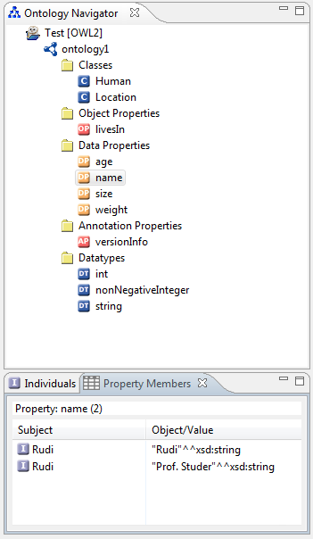

The Property Members View is a view of the OWL Perspective and part of the core of the NeOn Toolkit. The Property Members View displays all relations of the selected property. This view is similar to the Individuals View.

In the screen shot the data property "name" is in the Ontology Navigator selected and the Property Members View displays the list of the subjects and objects of all relations in a table. In case of data properties it shows the values and the corresponding data types of the objects.